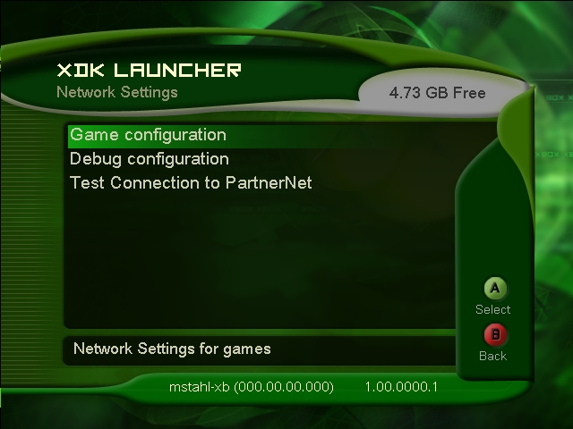

The network settings allow the developer to configure the network information on the target system for connecting to the local network. These settings can be adjusted by selecting Network Settings in the XDK Launcher Settings and Tools menu.
When changing network settings, or unplugging and replugging in network cables, the network connection is automatically re-acquired.

Illustration An image of the Network Settings screen.
The following items are listed in the Network Settings menu:
This section provides a brief overview of the commands available on the Game Configuration menu.
Note If the IP configuration is set automatically, the IP Address, Subnet Mask, and Gateway options are disabled. Use the A button on the controller to toggle between automatic and manual settings.
Note This refers to the game MAC address for the Xbox. The debug MAC address can be set in the Debug Configuration menu below.
Note If the DNS configuration is set automatically, the Primary DNS and Secondary DNS options are disabled. Use the A button on the controller to toggle between automatic and manual settings.
Note If the Configure PPPoE configuration is off, the user name, password, and service name options are disabled. Use the A button on the controller to toggle between off and on states.
Note This refers to the game MAC address for the Xbox. The debug MAC address can be set in the Debug Configuration menu below.
Note A small number of the original Xbox development consoles shipped with MAC addresses that were set to all zeros. If you have such a console, you must enter a valid MAC address or you won't be able to connect to Xbox Live or Partnernet because the console cannot generate a valid gamertag.
This section provides a brief overview of the commands available on the Debug Configuration menu. Note that these network settings are separate from the Game Configuration settings listed above.
Note If the DHCP-assigned IP configuration is set automatically, the DHCP-assigned IP Address, DHCP-assigned Subnet Mask, and DHCP-assigned Gateway options are disabled. Use the A button on the controller to toggle between automatic and manual settings.
Attempts to connect the Xbox to the Xbox Live service. A message of success or failure is then displayed. In addition to the success message, QOS (Quality Of Service) information is displayed. That information includes: